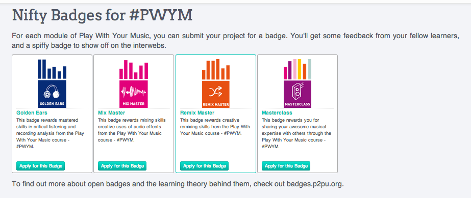

Project deliverables: register for accounts and say “Hi” to the community
INTRODUCTION TO PLAY WITH YOUR MUSIC - #PWYM
Are you ready to turn it up to 11? We are. Get ready a series of awesome learning and music making modules exploring creative music production processes, modeled using the music of Peter Gabriel! This post will familiarize you with the logistics of the course, get you sorted with the tools you need, and help you get to know your fellow PWYM participants.
#PWYM Team.
We’re Alex, Ethan, Vanessa and Participant 002 (collaboratively known as “Mister Mix”). You’ll see us in the PWYM community and popping up over email. Think about us as your “backup band” for the course. You’ll be learning from each other here, not us!
SCHEDULE
For the next 10-12 weeks, you’ll receive emails from “Mister Mix” with links to the modules in this course. At the beginning of the week we’ll drop a line with an assignment and supporting materials.
FINDING YOUR CREW
Please Introduce Yourself to the community and drop a pin near where you're from [link withheld] over at our interactive course map.
Image omitted from this public edition.
YOUR TOOLBELT
Your Learning Ensemble. The colleagues you meet and join with here at #PWYM comprise your "learning ensemble." Lean on them for feedback and support as you make your way through our modules.
Your Browser. This course will Participant 526 in Google Chrome. Get yourself all set with a download at [external link withheld] [link withheld]
Soundation [link withheld] and SoundCloud [link withheld]. These accounts are free, and we’ll be using them to make and share your sounds. Please sign up, and join the SoundCloud group [link withheld] we’ve put together for the course.
#PWYM Community. If you have questions your small group can’t answer, or want to share resources with the wider [#PWYM community][3], we’ve set up just the place to do that. if you'd prefer, join our Google+ [link withheld], Facebook [link withheld], and Twitter [link withheld] communities.
Badges. When you’ve finished your glorious creations, you can earn a Badge from P2PU. We’ve created some awesome Badges for the #PWYM course--check them out:

[link withheld]
LIVE INTERVIEWS:
Save the date for our first live interviews with Peter Gabriel collaborators Kevin Killen and Jerry Marotta. We'll be live streaming from NYU on Tuesday, May 20th from 2:30-4:30pm EDT/NYC time! The interview will be archived if you can't watch live.
We want to hear from you for the questions we'll ask Kevin and Jerry. Please share them in reply to the Questions for Kevin and Jerry topic in this category.
NEXT STEPS:
Register for your accounts and install Chrome
Say Hello to the Community--you could even share your favorite GIF if you like Image omitted from this public edition
Read through the rest of the topics in this module and submit your questions for Kevin and Jerry.
Rock On!
The #PWYM Team
Post #3 is omitted from the public reading edition to protect personal information.
Post #4 is omitted from the public reading edition to protect personal information.
Post #5 is omitted from the public reading edition to protect personal information.
Post #6 is omitted from the public reading edition to protect personal information.
Post #7 is omitted from the public reading edition to protect personal information.
Post #8 is omitted from the public reading edition to protect personal information.
Post #9 is omitted from the public reading edition to protect personal information.
Post #10 is omitted from the public reading edition to protect personal information.
Post #11 is omitted from the public reading edition to protect personal information.
Post #12 is omitted from the public reading edition to protect personal information.
Post #13 is omitted from the public reading edition to protect personal information.
Post #14 is omitted from the public reading edition to protect personal information.
Post #15 is omitted from the public reading edition to protect personal information.
Post #16 is omitted from the public reading edition to protect personal information.
Post #17 is omitted from the public reading edition to protect personal information.
Post #18 is omitted from the public reading edition to protect personal information.
Post #19 is omitted from the public reading edition to protect personal information.
Post #20 is omitted from the public reading edition to protect personal information.
Post #21 is omitted from the public reading edition to protect personal information.
Post #22 is omitted from the public reading edition to protect personal information.
Post #23 is omitted from the public reading edition to protect personal information.
Post #24 is omitted from the public reading edition to protect personal information.
Post #25 is omitted from the public reading edition to protect personal information.
Post #26 is omitted from the public reading edition to protect personal information.
Post #27 is omitted from the public reading edition to protect personal information.
Post #28 is omitted from the public reading edition to protect personal information.
Post #29 is omitted from the public reading edition to protect personal information.
Post #30 is omitted from the public reading edition to protect personal information.
Post #31 is omitted from the public reading edition to protect personal information.
Post #32 is omitted from the public reading edition to protect personal information.
Post #33 is omitted from the public reading edition to protect personal information.
Post #34 is omitted from the public reading edition to protect personal information.
Post #35 is omitted from the public reading edition to protect personal information.
Post #36 is omitted from the public reading edition to protect personal information.
Post #37 is omitted from the public reading edition to protect personal information.
Post #38 is omitted from the public reading edition to protect personal information.
Post #39 is omitted from the public reading edition to protect personal information.
Post #40 is omitted from the public reading edition to protect personal information.
Post #41 is omitted from the public reading edition to protect personal information.
Post #42 is omitted from the public reading edition to protect personal information.
Post #43 is omitted from the public reading edition to protect personal information.
Post #44 is omitted from the public reading edition to protect personal information.
Post #45 is omitted from the public reading edition to protect personal information.
Post #46 is omitted from the public reading edition to protect personal information.
Post #47 is omitted from the public reading edition to protect personal information.
Post #48 is omitted from the public reading edition to protect personal information.
Post #50 is omitted from the public reading edition to protect personal information.
Post #51 is omitted from the public reading edition to protect personal information.
Post #52 is omitted from the public reading edition to protect personal information.
Post #53 is omitted from the public reading edition to protect personal information.
Post #54 is omitted from the public reading edition to protect personal information.
Post #55 is omitted from the public reading edition to protect personal information.
Post #56 is omitted from the public reading edition to protect personal information.
Post #57 is omitted from the public reading edition to protect personal information.
Post #58 is omitted from the public reading edition to protect personal information.
Post #59 is omitted from the public reading edition to protect personal information.
Post #60 is omitted from the public reading edition to protect personal information.
Post #61 is omitted from the public reading edition to protect personal information.
Post #62 is omitted from the public reading edition to protect personal information.
Post #63 is omitted from the public reading edition to protect personal information.
Post #64 is omitted from the public reading edition to protect personal information.
Post #65 is omitted from the public reading edition to protect personal information.
Post #66 is omitted from the public reading edition to protect personal information.
Post #67 is omitted from the public reading edition to protect personal information.
Post #68 is omitted from the public reading edition to protect personal information.
Post #69 is omitted from the public reading edition to protect personal information.
Post #70 is omitted from the public reading edition to protect personal information.
Post #72 is omitted from the public reading edition to protect personal information.
Post #73 is omitted from the public reading edition to protect personal information.
Post #74 is omitted from the public reading edition to protect personal information.
Post #75 is omitted from the public reading edition to protect personal information.
Post #76 is omitted from the public reading edition to protect personal information.
Post #77 is omitted from the public reading edition to protect personal information.
Post #78 is omitted from the public reading edition to protect personal information.
Post #79 is omitted from the public reading edition to protect personal information.
Post #80 is omitted from the public reading edition to protect personal information.
Post #81 is omitted from the public reading edition to protect personal information.